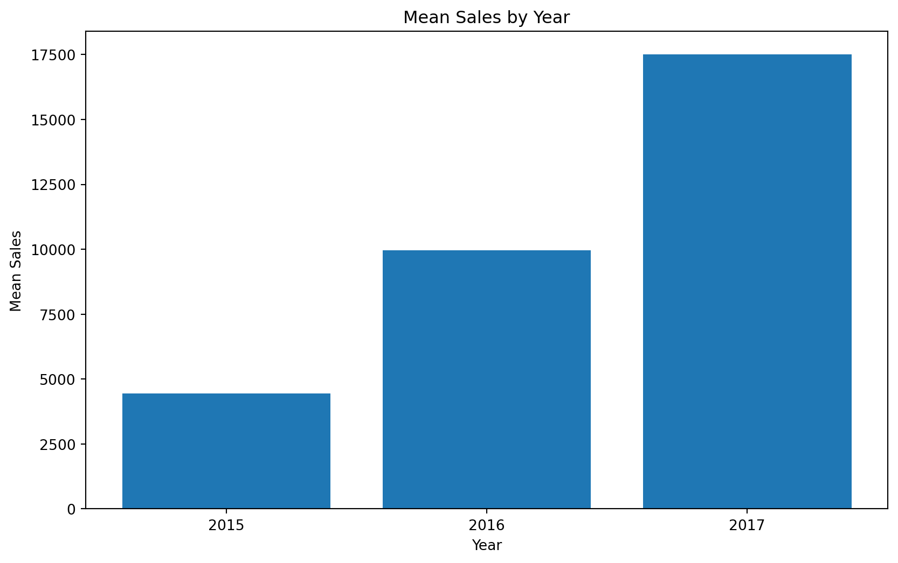
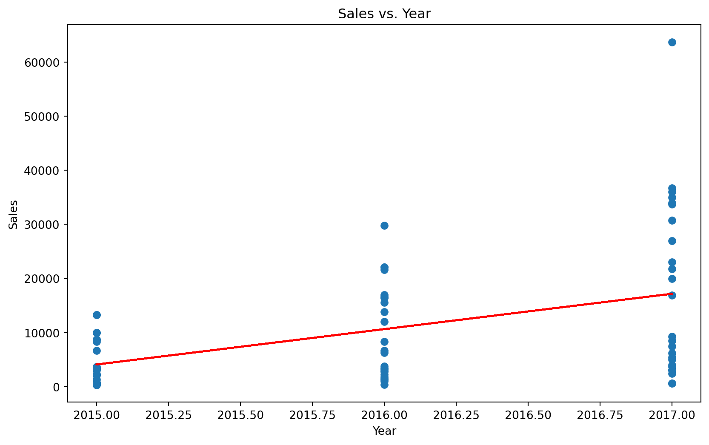

Vi är ekonomer och HR-personal och de flesta kan väldigt lite om AI och använder det inte. I bästa fall använder några ibland chatgpt eller copilot men inget systematiskt.
Jag skulle gärna vilja att ni inspirerar oss 😊 och skapar nyfikenhet så att vi kan börja hitta områden där vi kan ta hjälp av AI.
Ekonomer jobbar med tex.
budget,
uppföljning,
prognoser,
bokslut,
forskningsbudget och redovisningar.
HR tex:
rekryteringar (tex många ansökningar som ska gås igenom),
# prompt: läs data från denna webb adress "https://github.com/cca-cce/osm-cda/raw/refs/heads/main/csv/aiws-241022.xlsx"; använd det tredje kalkylbladet för att skapa objektet df; visa sedan dom 15 första raderna i df import pandas as pd# Läs in det tredje kalkylbladet (sheet_name=2) från den angivna adressendf = pd.read_excel("https://github.com/cca-cce/osm-cda/raw/refs/heads/main/csv/aiws-241022.xlsx", sheet_name=2)# Visa de 15 första raderna i dfdf.head(15)
Year
Category
Product
Sales
Rating
0
2017
Components
Chains
20000
0.75
1
2015
Clothing
Socks
3700
0.22
2
2017
Clothing
Bib-Shorts
4000
0.22
3
2015
Clothing
Shorts
13300
0.56
4
2017
Clothing
Tights
36000
1.00
5
2015
Components
Handlebars
2300
0.35
6
2016
Clothing
Socks
2300
0.28
7
2016
Components
Brakes
3400
0.36
8
2016
Bikes
Mountain Bikes
6300
0.40
9
2017
Components
Brakes
5400
0.38
10
2016
Accessories
Helmets
17000
0.90
11
2016
Accessories
Lights
21600
0.90
12
2016
Accessories
Locks
29800
0.90
13
2016
Components
Bottom Brackets
1000
0.23
14
2015
Clothing
Jerseys
6700
0.05
# prompt: skapa en ny variabel "Year_Categorical" där värdet av "Year" representeras som en sträng och sortera raderna i stigande ordning efter denna variabel; skapa sedan en ny variabel "mean_sales_by_year" och ett stapeldiagram som visar sambandet mellan medelvärde av "Sales" och den nya kategoriska variabeln# Convert 'Year' to string and sort the DataFramedf['Year_Categorical'] = df['Year'].astype(str)df_sorted = df.sort_values('Year_Categorical')# Calculate the mean sales for each yearmean_sales_by_year = df_sorted.groupby('Year_Categorical')['Sales'].mean()# Create a bar chartimport matplotlib.pyplot as pltplt.figure(figsize=(10, 6))plt.bar(mean_sales_by_year.index, mean_sales_by_year.values)plt.xlabel('Year')plt.ylabel('Mean Sales')plt.title('Mean Sales by Year')plt.show()

# prompt: undersök om det finns ett statistiskt säkerställt samband mellan medelvärde av "Sales" och "Year" representerat som numerisk variabel; förklara styrkan och riktningen på sambandetimport pandas as pdimport statsmodels.formula.api as smimport matplotlib.pyplot as plt# Utför en regressionsanalys för att undersöka sambandet mellan Sales och Yearmodel = sm.ols('Sales ~ Year', data=df).fit()# Förklara styrkan och riktningen på sambandet baserat på regressionsresultatetif model.pvalues['Year'] <0.05:print("Det finns ett statistiskt säkerställt samband mellan medelvärdet av Sales och Year.")if model.params['Year'] >0:print("Sambandet är positivt, vilket innebär att högre värden på Year tenderar att korrelera med högre medelvärden på Sales.")else:print("Sambandet är negativt, vilket innebär att högre värden på Year tenderar att korrelera med lägre medelvärden på Sales.")# Beräkna korrelationskoefficienten för att mäta styrkan på sambandet correlation = df['Sales'].corr(df['Year'])print(f"Korrelationskoefficienten är: {correlation}")ifabs(correlation) >=0.7:print("Sambandet är starkt.")elifabs(correlation) >=0.3:print("Sambandet är måttligt.")else:print("Sambandet är svagt.")else:print("Det finns inget statistiskt säkerställt samband mellan medelvärdet av Sales och Year.")
Det finns ett statistiskt säkerställt samband mellan medelvärdet av Sales och Year.
Sambandet är positivt, vilket innebär att högre värden på Year tenderar att korrelera med högre medelvärden på Sales.
Korrelationskoefficienten är: 0.4492036850599069
Sambandet är måttligt.
# prompt: visualisera sambandet mellan "Sales" och "Year" representerat som numerisk variabel med hjälp av ett punkt diagram med röd trendlinjeimport pandas as pdimport numpy as npimport matplotlib.pyplot as plt# Assuming 'df' is your DataFrame with 'Sales' and 'Year' columns# Create a scatter plotplt.figure(figsize=(10, 6))plt.scatter(df['Year'], df['Sales'])plt.xlabel('Year')plt.ylabel('Sales')plt.title('Sales vs. Year')# Add a red trendlinez = np.polyfit(df['Year'], df['Sales'], 1)p = np.poly1d(z)plt.plot(df['Year'], p(df['Year']), "r--")plt.show()

# prompt: spara det nya objektet "mean_sales_by_year" till en datafil av typen xlsx# Spara mean_sales_by_year till en xlsx-fil#mean_sales_by_year.to_excel('mean_sales_by_year.xlsx')